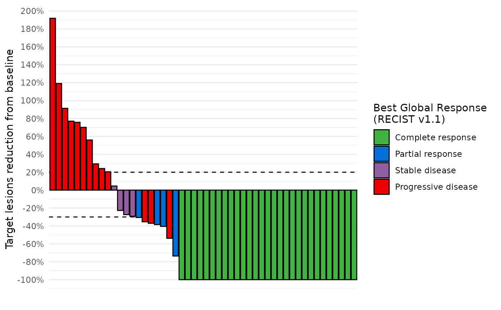
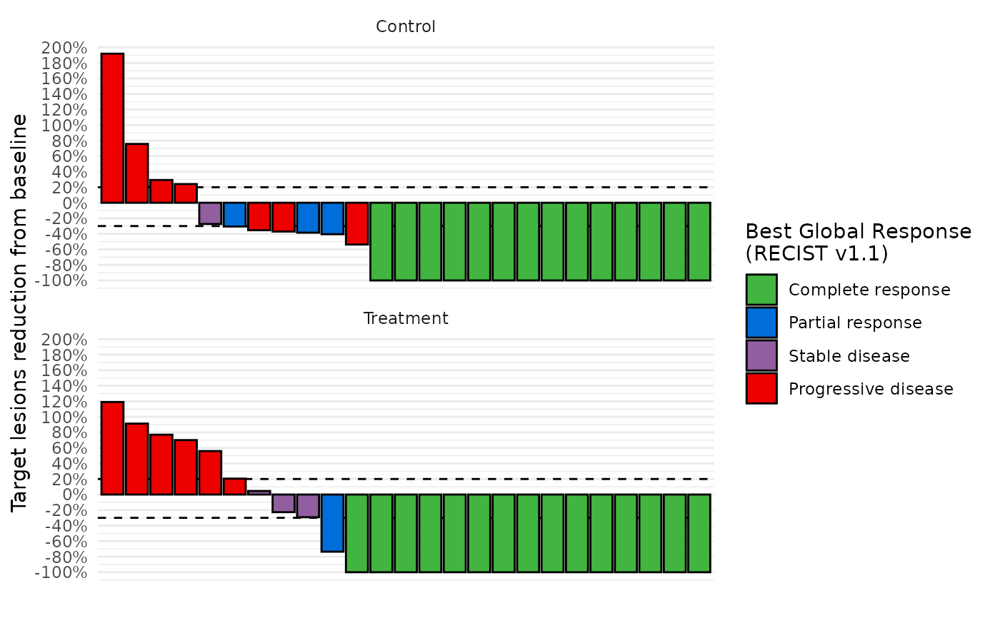
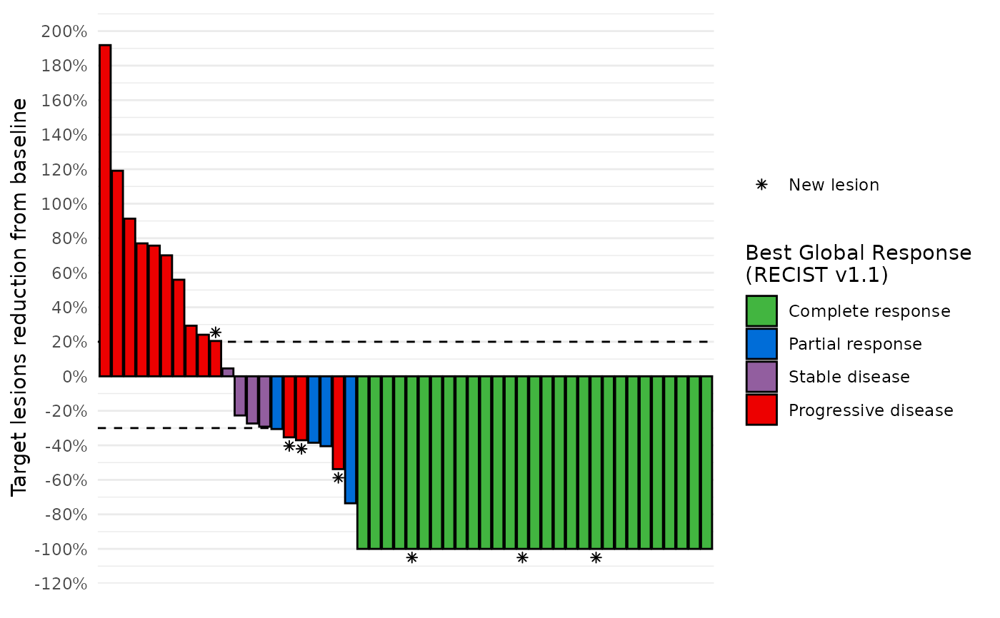
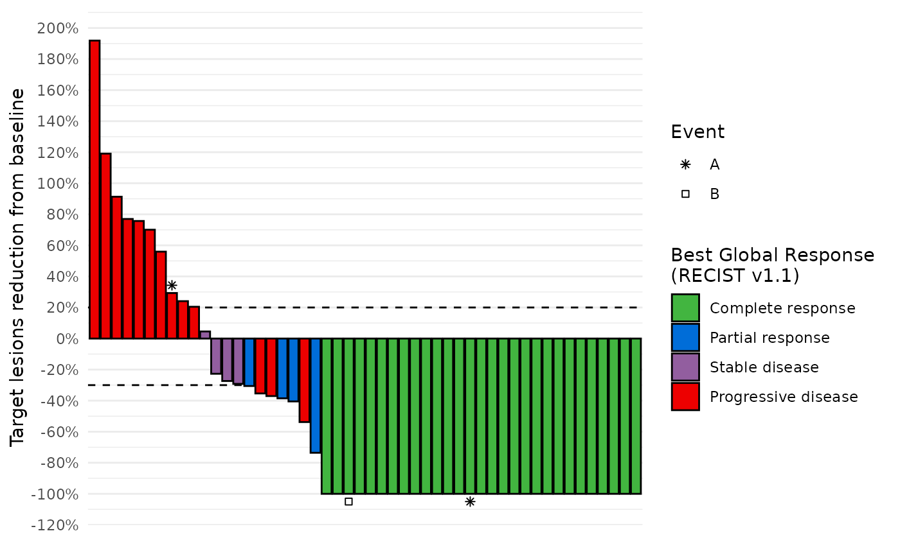

Creates a waterfall plot showing the change from baseline in target lesion size for individual patients, optionally grouped by treatment arm.
Arguments
- data
A dataset containing RECIST best response data. Use calc_best_response to format your raw data.
- ...
Not used. Ensures that only named arguments are passed.
- y
The column representing the numeric outcome (typically change in tumor size). Default is
"target_sum_diff_first".- fill
The column indicating the filling color. Default is
"best_response", the best response category.- shape
The column to use for an shape layer (e.g., indicating mutation status).
- arm
The column indicating treatment arms for faceting.
- subjid
The column identifying subjects. Default is
"SUBJID".- resp_colors
Colors assigned to response categories.
- warnings
Whether to display warnings.
Examples
db = grstat_example(N=50)
data_best_resp = calc_best_response(db$recist)
#simple example
waterfall_plot(data_best_resp)

#facet by arm
data_best_resp %>%
dplyr::left_join(db$enrolres, by="subjid") %>%
waterfall_plot(arm="ARM")

#add symbols
#use the NA level to not show the case
set.seed(0)
data_symbols = db$recist %>%
dplyr::summarise(
new_lesion=ifelse(any(rcnew=="Yes", na.rm=TRUE), "New lesion", NA),
example_event=cut(runif(1), breaks=c(0,0.05,0.1,1), labels=c("A", "B", NA)),
.by=subjid
)
data_best_resp %>%
dplyr::left_join(data_symbols, by="subjid") %>%
waterfall_plot(shape="new_lesion")

data_best_resp %>%
dplyr::left_join(data_symbols, by="subjid") %>%
waterfall_plot(shape="example_event") +
ggplot2::labs(shape="Event")
